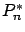
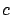
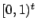

Siguiente: Algoritmo para la evaluación
Subir: Estimación Numérica: Métodos QMC
Anterior: Método QMC
Índice General
Método RQMC
Si tenemos una secuencia de baja discrepancia y le sumamos un valor
fijo a todos sus puntos de la forma:
la discrepancia en esta nueva secuencia  se mantiene pues la
estructura se mantiene; es así que surge la idea de los métodos RQMC
(Randomized Quasi Monte Carlo). Si  en la ecuación
anterior es una VA uniforme en , se podrían hacer varias
realizaciones QMC con obtenidos a partir de distintos
valores de sorteados aleatoriamente, y al promediar los valores
obtenidos bajaría aún más la varianza del estimador.
Volviendo a la integral de Vogler, faltaría poner los límites de
integración en el hipercubo unitario y se estaría en condiciones de
aplicar los métodos recién explicados. Para ello hace falta un
último cambio de variable.
donde
Siguiente: Algoritmo para la evaluación
Subir: Estimación Numérica: Métodos QMC
Anterior: Método QMC
Índice General
SAPO